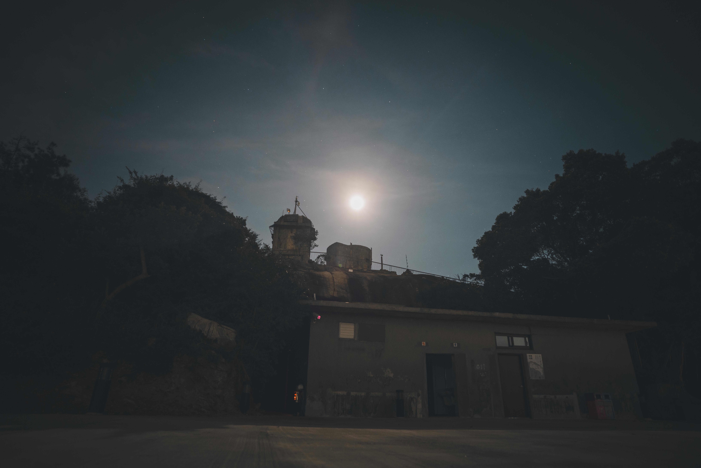
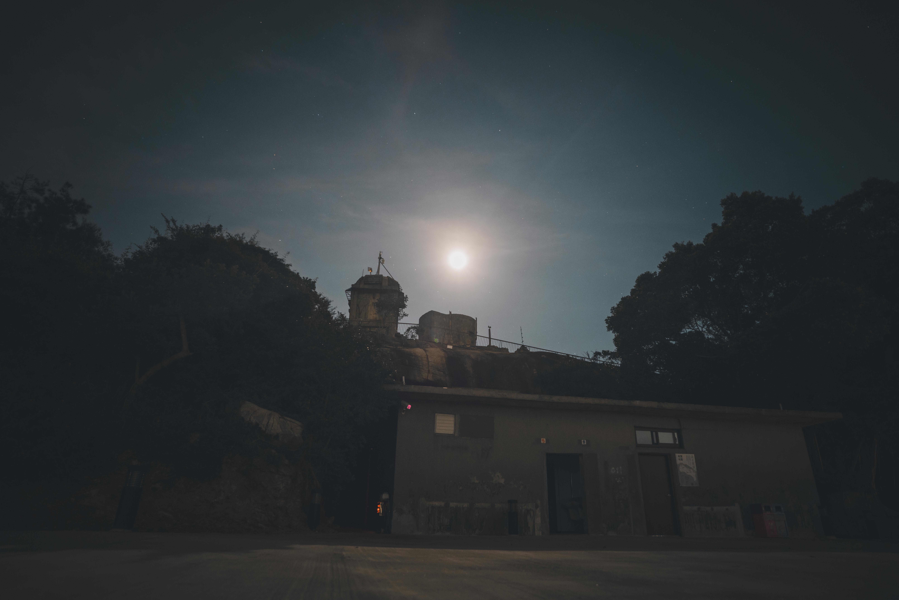
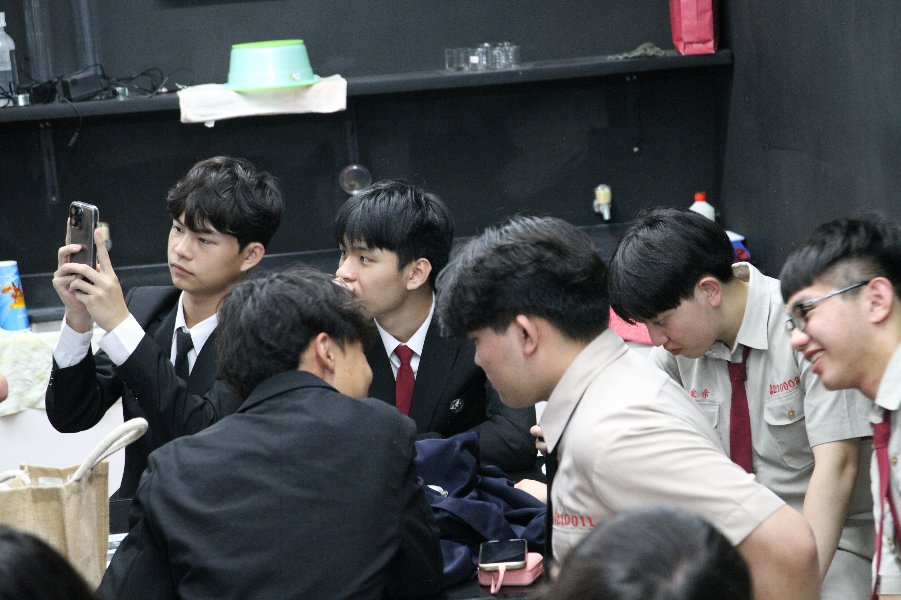
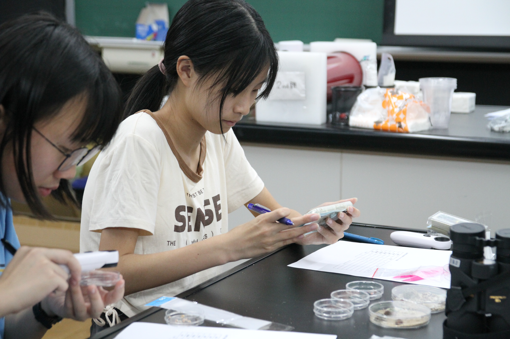
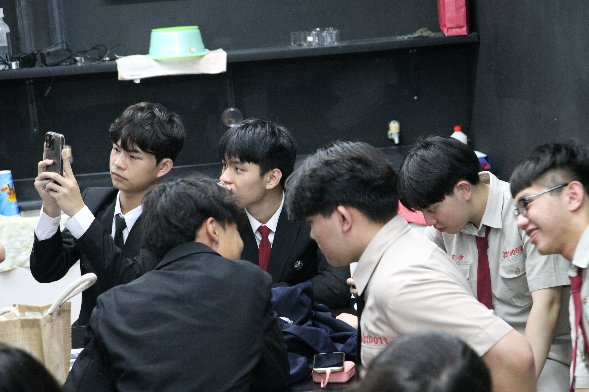
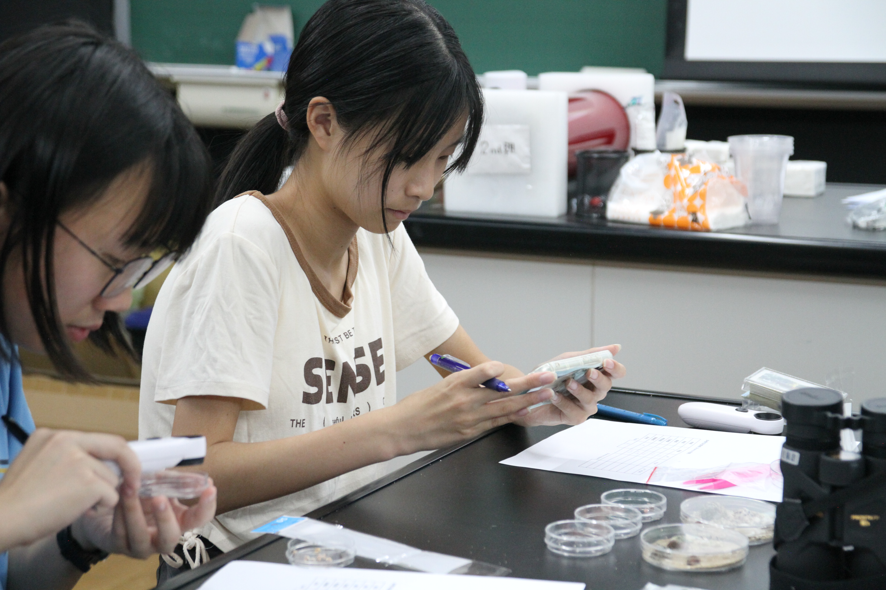

金門天文跨海交流計劃是一場結合天文、科技與生態的跨島深度交流。 Our Kinmen Project has been realized! This is a deep cross-island exchange combining astronomy, technology, and ecology.
團隊成員Team Members
- 謝承安 臺大物理系二年級 | 臺大天文社社長 | 星野發起人、金門計畫總召Hsieh Cheng-An NTU Physics Year 2 | NTU Astronomy Club President | Hoshiko Founder, Kinmen Project Coordinator
- 涂宇軒 臺大物理系二年級 | 臺大天文社幹部 | 金門計畫總召Tu Yu-Hsuan NTU Physics Year 2 | NTU Astronomy Club Cadre | Kinmen Project Vice Coordinator
- 許翌倫 清大物理系二年級 | 清大天文社幹部 | 技術組負責人Hsu Yi-Lun NTHU Physics Year 2 | NTHU Astronomy Club Cadre | Technology Team Lead
- 蔡沂恩 清大工科系二年級 | 清大天文社幹部 | 教案負責人Tsai Yi-En NTHU ESS Year 2 | NTHU Astronomy Club Cadre | Lesson Plan Lead
- 陳柏翰 臺大物理系二年級 | 臺大天文社幹部 | 教案總負責人Chen Po-Han NTU Physics Year 2 | NTU Astronomy Club Cadre | Head of Lesson Planning
- 許孟凱 臺大生科系二年級 | 曾參與野一片夢之海(NGO) | 隊輔組負責人Hsu Meng-Kai NTU Life Sci Year 2 | Former "Dream Ocean" NGO | Team Counselor Lead
- 陳子彬 臺大物理系二年級 | 臺大天文社幹部 | 教案負責人Chen Tzu-Pin NTU Physics Year 2 | NTU Astronomy Club Cadre | Lesson Plan Lead
- 陳欣鈺 臺大大氣系二年級 | 臺大天文社副社長 | 教案負責人Chen Hsin-Yu NTU Atmospheric Sci Year 2 | NTU Astronomy Club Vice President | Lesson Plan Lead
- 李曜成 臺大機械系二年級 | 臺大天文社幹部 | 教案負責人Li Yao-Cheng NTU Mech Eng Year 2 | NTU Astronomy Club Cadre | Lesson Plan Lead
- 謝菀芸 政大法律系二年級 | 政大天文社社長 | 路邊天文負責人Hsieh Wan-Yun NCCU Law Year 2 | NCCU Astronomy Club President | Sidewalk Astronomy Lead
課程內容Curriculum
Arduino 課程Arduino Course
透過操作大氣與土壤溫濕度監測器，觀察身邊環境。學員將學習感測器原理、Arduino 電路接線與基礎程式撰寫，實現資料即時顯示。從基礎入門出發，引導進入實作應用，培養動手能力與創新思維。 Through operating atmospheric and soil temperature/humidity monitors, students observe their environment. They learn sensor principles, Arduino circuit wiring, and basic coding to realize real-time data display. Starting from basics to practical application, fostering hands-on ability and innovative thinking.
天文課程Astronomy Course
舉辦於金湖國中星象館。透過天文先備課程，學員初步認識星空在不同文化中的象徵意義，結合天文與人文。同時理解望遠鏡成像物理意義，學習正確使用不同類型望遠鏡。從光學原理入手，探討焦距、放大倍率、視場範圍等，掌握基本原理。最終深入了解從入門、觀測到研究的路徑。 Held at Jinhu Junior High Planetarium. Through preparatory courses, students learn the cultural significance of starry skies, combining astronomy and humanities. They understand telescope physics (optics, focal length, magnification) and learn to use different telescopes correctly. The goal is to provide a conceptual foundation for night observations.
生態課程Ecology Course
舉辦於金門高中地科教室。金門屬島嶼生態系，本課程著重介紹當地植物分類學，佐以實際貝類的觀察紀錄，讓學生了解當地價值與環境保護重要性。 Held at Kinmen High School Earth Science classroom. Focusing on Kinmen's island ecosystem and local species. Introduction to local plant taxonomy and observation of local shells.
星空故事館：金門天文巡遊 Starry Story House: Kinmen Astronomy Tour
「能和他人共享在星空下感受到的喜悅，是件很幸福的事。」 "Sharing the joy felt under the starry with others is a truly happy thing."
星野的孩子團隊一直在做的事，就是將星空帶到孩子們身旁。這次，我們希望能把這份對天文的熱愛傳遞給更多人，因此誕生了金門限定的快閃活動——「星空故事館」。 The Hoshiko team has always been about bringing the starry sky to children. This time, we wanted to pass this passion for astronomy to even more people, giving birth to the Kinmen-exclusive pop-up event — "Starry Story House".
在這場特別的巡遊中，我們邀請大家來坐坐，參與我們的路邊天文，體驗西洋星空導覽與望遠鏡觀測，並聽聽金門夜空中獨有的神明信仰故事。 In this special tour, we invite everyone to sit down, join our Sidewalk Astronomy, experience western Starry tours and telescope observations, and listen to the unique stories of deity beliefs in Kinmen's night sky.
更有趣的是我們的星空故事收集計畫：「帶一個故事來，換一片星空走」。只要來到我們的攤位，分享一個你與星空有關的小故事（也許是某次難忘的觀星回憶，或是參與活動的心得），並追蹤分享我們的活動，就能獲得一張金門限定的星空明信片。 Even more interesting is our Starry Story Collection Project: "Bring a story, leave with a starry". Just come to our booth, share a small story about you and the starry sky (perhaps a memorable stargazing memory or thoughts on an event), follow and share our page, and you'll receive a Kinmen-exclusive starry sky postcard.
期待在星空下，聆聽專屬於你的故事。 We look forward to hearing your unique story under the starry sky.
活動日程Schedule
-
6/08 18:00 - 20:30
星空故事館 @ 慈湖 (太陽、觀星導覽) Starry Story House @ Cihu (Sun & Stargazing Tour) -
6/09 13:00 - 17:00
課程：Arduino 科學感測器實作 (城中數資班) Exploration Camp: Arduino Sensor Implementation (Jincheng JHS) -
6/09 19:30 - 21:30
星空故事館 @ 134 高地暗空園區 (觀星導覽) Starry Story House @ 134 Highland Dark Sky Park (Stargazing) -
6/10 16:30 - 18:00
課程：天文主題課程 (金湖國中) Astronomy Theme (Jinhu JHS) -
6/10 18:00 - 20:30
星空故事館 @ 金湖國中校門口 (觀星導覽) Starry Story House @ Jinhu JHS Gate (Stargazing) -
6/11 16:30 - 18:00
課程：生態主題課程 (金門高中) Ecology Theme (Kinmen Senior High School) -
6/11 19:30 - 21:30
星空故事館 @ 金門高中天文台 (觀星導覽) Starry Story House @ Kinmen Senior High School Observatory (Stargazing)
活動花絮Gallery
 

 


